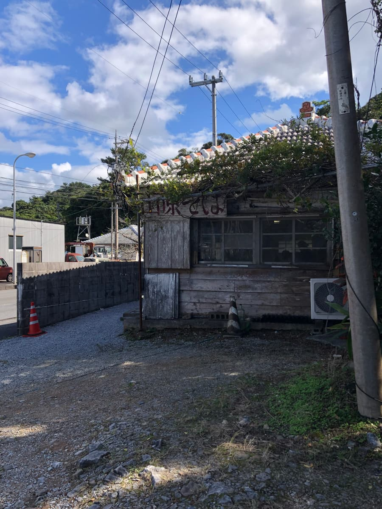
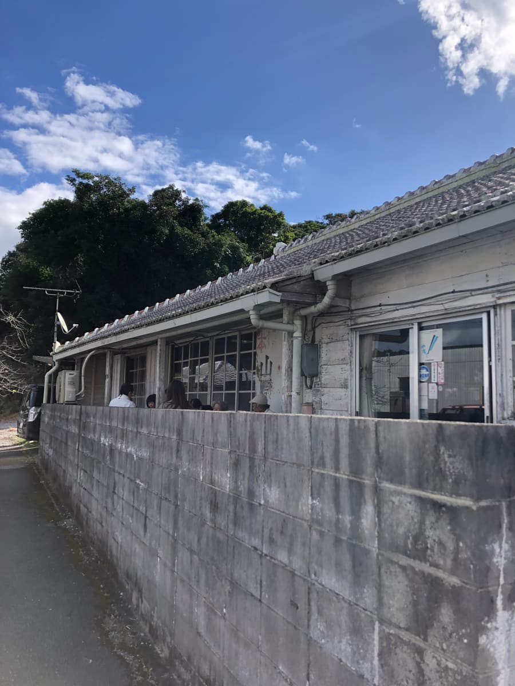
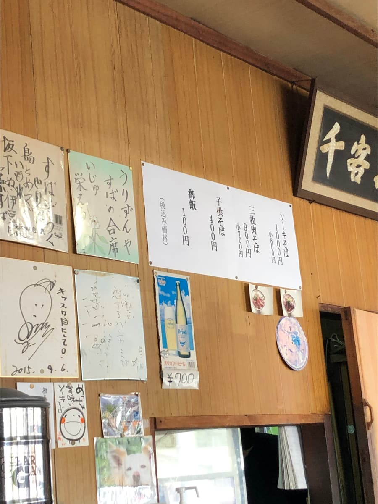
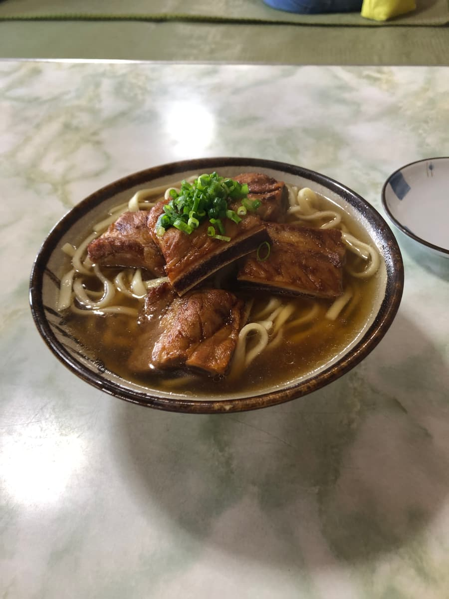
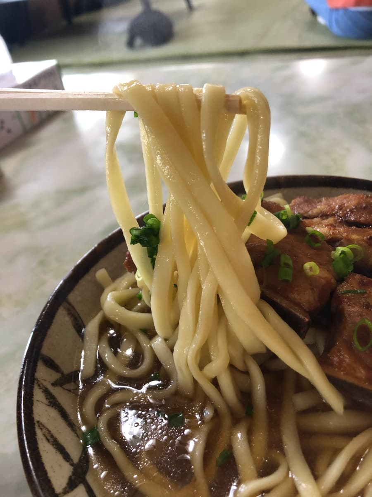

※這篇文章是用 AI（Claude Sonnet 4）寫的，我只稍微補充了一部分哈哈
2024年12月吃的😆 這次造訪了位於本部町伊豆味的「山原麵」！這家店其實我以前就很在意，終於得以造訪了✨


如大家所見，外觀很有味道，像是古民宅一樣。是水泥瓦的沖繩風格建築，散發出十足的「山原（Yanbaru）」氛圍🏠 周圍是悠閒的鄉間小路，更增添了名店的感覺呢。
店前的招牌上寫著「山原麵」，感覺是在地的麵店。有停車場，開車前往也很放心🚗

走進店內，牆上貼了很多手寫的菜單，十分有家常的氛圍。
這次點了可說是招牌菜單的「排骨麵」。有很多觀光客上門，店裡相當熱鬧😄

等了一會兒，冒著熱氣的排骨麵送上桌了。外觀雖然簡單，但放了一大塊排骨，非常有份量！
照慣例先從湯頭開始喝🍜 喝了一口……這很有意思！湯色相當深，我覺得這跟沖繩麵的源流「唐人麵」有點像。
味道上跟一般的豬骨或柴魚高湯不太一樣，有獨特的風味。還喝得到甜味，也許是醬油為底？這是我在其他店沒喝過的、相當獨特的湯頭。可能會因人而異，不過我覺得很有趣😋

接著吃麵。中粗的直麵，口感偏軟。
然後是讓人在意的排骨……這個也很獨特！吃起來相當有嚼勁，筋感也確實保留著。跟其他店的排骨口感明顯不同，是我至今沒吃過的類型。也許是烹調方式或部位不同🤔
老實說，這種排骨口感是我第一次體驗。習慣燉得軟爛排骨的人可能會有點驚訝，但我覺得這也是「山原麵」的個性，很有意思。
環顧店內，有很多觀光客上門，可見人氣之高。也因為位在本部町這個觀光地，應該有很多人是逛完美麗海水族館或備瀨的福木林蔭道之後順道過來的吧🐠
此外，2025年7月25日開幕的 JUNGLIA 沖繩也很近呢😄
當地人似乎也很喜愛，也看到幾位像是常客的客人。可以明顯感受到這是一家扎根在地、備受親近的店。
整體的印象是，這家店提供與其他店截然不同的獨特風格沖繩麵。不管是湯頭還是排骨，都以好的方式超乎預期，成品很有個性。喜歡沖繩麵的人，我覺得很值得來體驗一次👍
評分（9分/15分）：普通好吃。如果有機會造訪本部町，請務必過來看看。離美麗海水族館、JUNGLIA 都不太遠，是順道觀光很容易過來的地點。不過因為是人氣店，有時會很擁擠，建議抓寬裕的時間前往⏰ 這次也遇到了好吃的沖繩麵，很滿足！下次還會再開拓別家店，敬請期待～😊
麵：★★★☆☆（3）
湯頭：★★★☆☆（3）
配料：★★★☆☆（3）